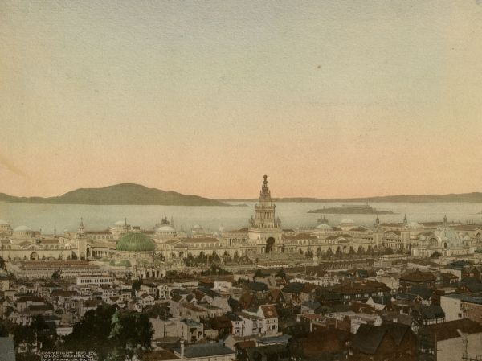
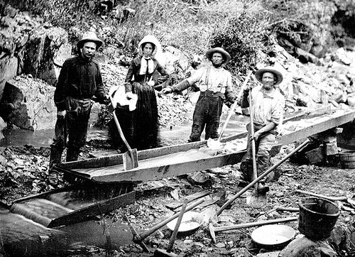

History of the Bay Area
The Bay Area has a rich history that spans from the indigenous peoples who first inhabited the region, to the Spanish and Mexican periods, the Gold Rush, and into the modern era of technology and innovation. This page explores key moments and figures that have shaped the Bay Area's unique identity.


California Gold Rush — 1849
The California Gold Rush began in 1848 after gold was discovered at Sutter's Mill, but San Francisco became one of the most important centers of the massive migration that followed in 1849. Thousands of people arrived in the city hoping to find wealth, causing San Francisco's population and economy to grow rapidly. The Gold Rush transformed San Francisco from a small settlement into a major American city and helped shape its identity as a center of opportunity and commerce.
Learn moreGreat San Francisco Earthquake — 1906
On April 18, 1906, a powerful earthquake struck San Francisco, causing widespread destruction throughout the city. The earthquake and fires that followed destroyed thousands of buildings and left much of San Francisco in ruins. Despite the enormous damage, the city rebuilt itself and eventually emerged stronger, making the disaster an important part of San Francisco's history.
Learn more